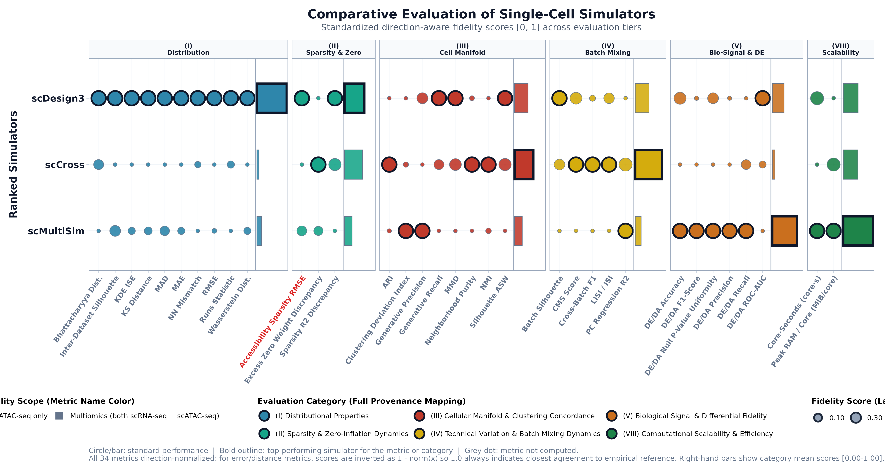
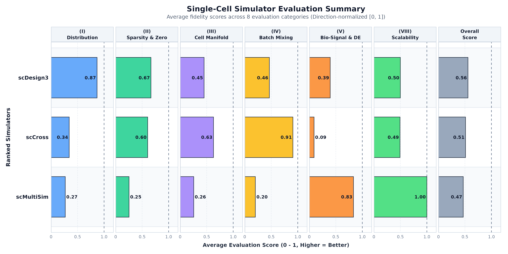
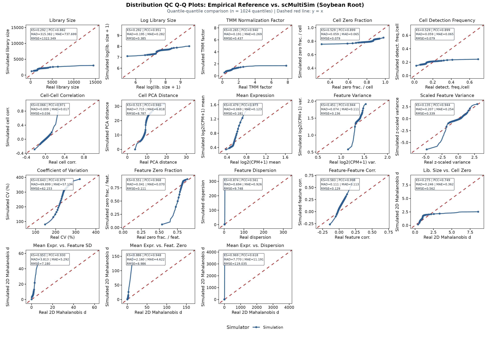
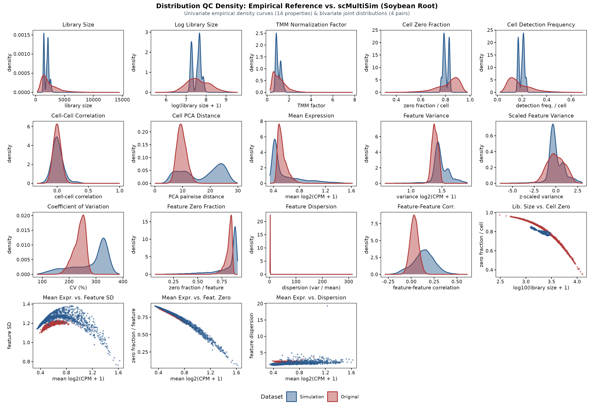
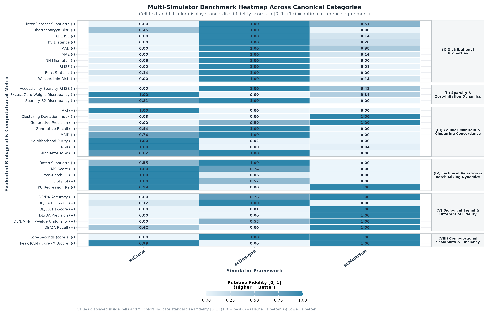
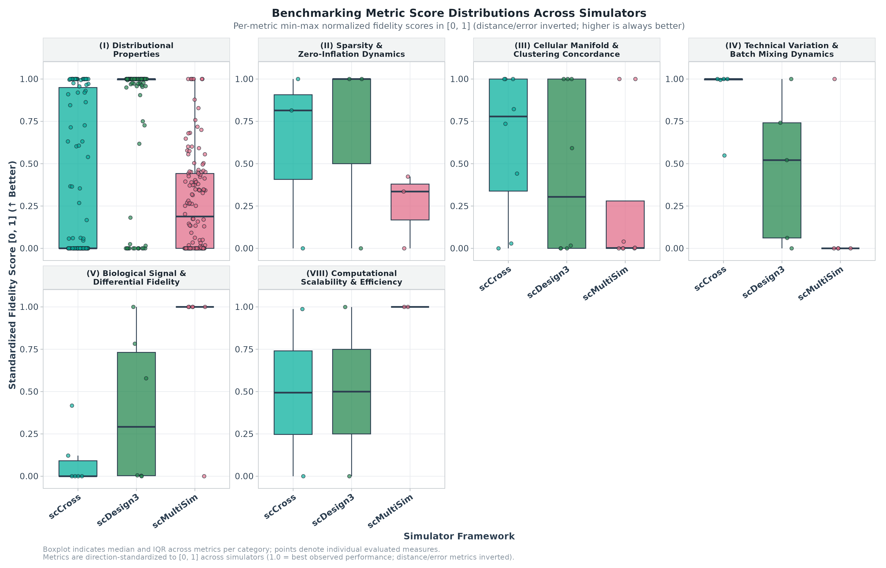
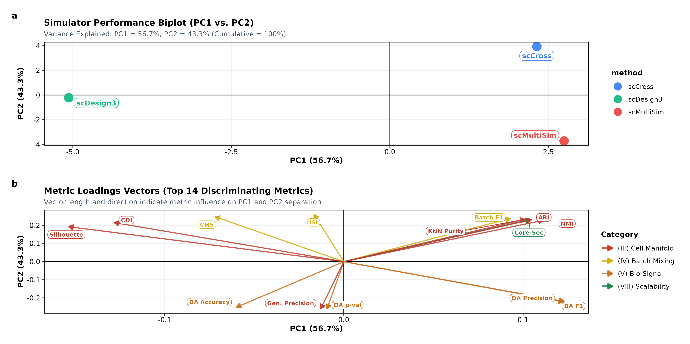
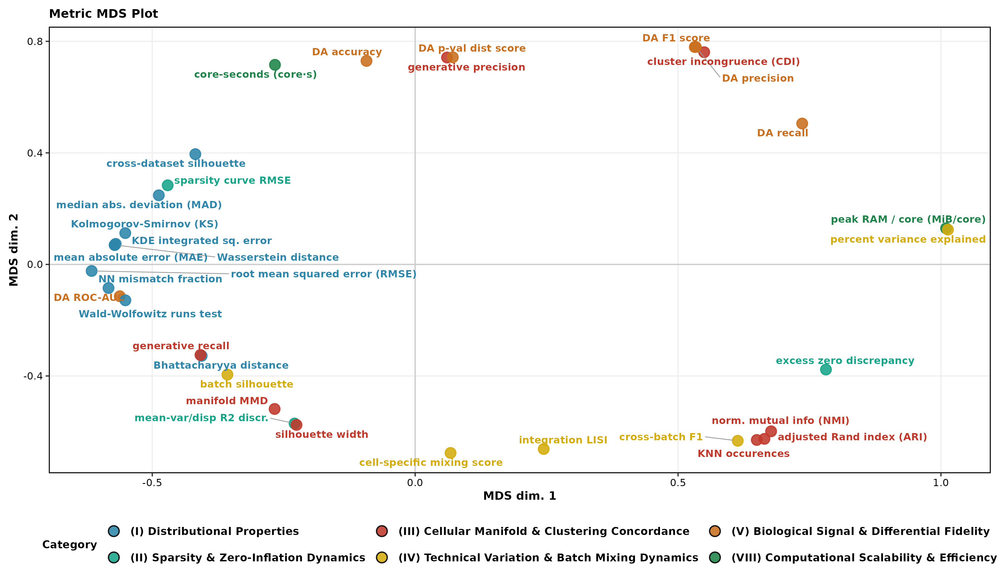
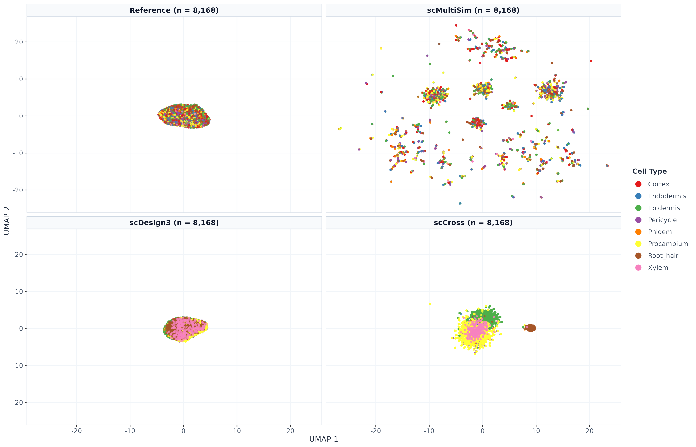
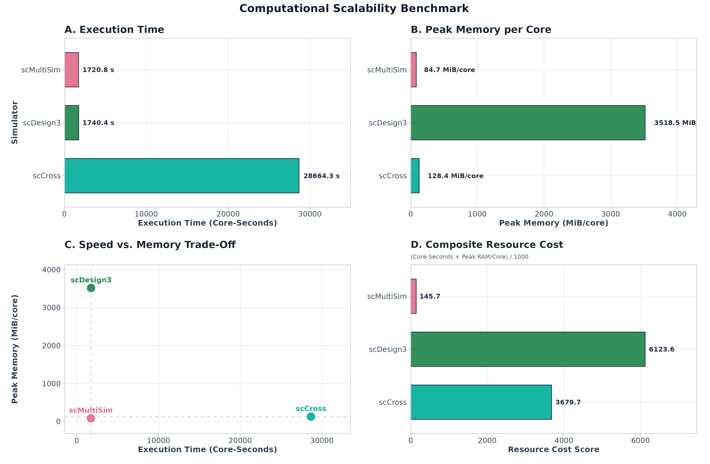

Introduction
Single-cell assay for transposase-accessible chromatin using sequencing (scATAC-seq) profiling provides profound insights into epigenomic regulation, chromatin architecture, and transcription factor occupancy at cellular resolution. In contrast to single-cell transcriptomics, scATAC-seq peak accessibility data present distinct statistical and biophysical features: * Extreme Sparsity: Over 90% to 98% of values in peak-by-cell matrices are zeroes due to the diploid limit (at most 2 genomic copies per cell) and technical capture dropouts. * Near-Binary Open/Closed Dynamics: Raw counts predominantly reflect discrete accessibility (0, 1, or 2 transposase insertions) rather than continuous high-magnitude expression. * TF-IDF Normalization: Feature transformation relies on Term Frequency-Inverse Document Frequency (TF-IDF) rather than to balance locus-specific accessibility against global sequencing depth. * Quadratic Accessibility-Sparsity Relationship: In empirical datasets, locus detection frequency adheres to a characteristic quadratic curve with respect to mean accessibility.
To ensure computational pipelines, peak-calling algorithms, and cell-type classifiers developed on synthetic data are biologically reliable, researchers require rigorous tools to validate how faithfully simulated scATAC-seq data reproduce real biological experiments.
scSimEval provides a standardized,
reference-based benchmarking framework to systematically quantify
single-cell epigenomic simulation fidelity. For unimodal
scATAC-seq, scSimEval
evaluates synthetic data across 6 active evaluation
categories:
- Category I: Distributional Properties — Univariate statistical distances (Wasserstein, Kolmogorov–Smirnov, MAD, Bhattacharyya) evaluated across cell-level insertion sums, peak detection rates, and Signac/simPIC-standard TF-IDF transformed accessibility coordinates.
- Category II: Sparsity & Zero-Inflation Dynamics — Quadratic accessibility-sparsity curve parameters (curve RMSE, fit discrepancy) and zero-probability profile preservation.
- Category III: Cellular Manifold & Clustering Concordance — Latent epigenomic geometry preservation, Maximum Mean Discrepancy (MMD), Generative Precision & Recall, Average Silhouette Width (ASW), Adjusted Rand Index (ARI), and Normalized Mutual Information (NMI).
- Category IV: Technical Variation & Batch Mixing Dynamics — Batch Silhouette Width, Principal Component Regression (), Cell-Specific Mixing Score (CMS), Inverse Simpson’s Index (ISI), and cross-batch cell-type classification transfer F1.
-
Category V: Biological Signal & Differential
Accessibility (DA) Fidelity — Pseudobulk
edgeR-QLFstatistical testing across biological replicates assessing null -value uniformity, marker peak detection accuracy, precision, recall, F1-score, and ROC-AUC. -
Category VIII: Computational Scalability &
Efficiency — Hardware-normalized execution runtime
(
core_seconds), resident peak memory per allocated core (memory_per_core_mib), simulation throughput (cells/second), and speed-memory trade-offs.
Note on Categories VI & VII: Category VI (Multiomics Integration & Alignment) evaluates cross-modality latent alignment between paired or unpaired scRNA-seq and scATAC-seq co-assays, and Category VII (Trajectory & Lineage Topology) requires continuous transcriptional kinetics. Both are naturally inactive for unimodal scATAC-seq evaluations.
Direction-Aware Score Normalization
Raw metrics span disparate physical units (Kolmogorov–Smirnov
distances, runtimes in seconds, RAM in MiB, correlation coefficients).
scSimEval standardizes all raw metrics into
direction-aware fidelity scores in
,
where
indicates perfect biological fidelity: * For distance and error
metrics where lower values represent superior accuracy (e.g.,
Wasserstein, MMD, accessibility-sparsity RMSE), scores are inverted:
.
* For bounded concordance indices where higher values represent superior
fidelity (e.g., ARI, NMI, Generative Precision, DA ROC-AUC), scores are
scaled linearly to
.
* For mixing and balance metrics where values closer to zero indicate
optimal batch mixing without clustering artifacts (e.g., Batch
Silhouette), scores are centered symmetrically.
1. Input Data Requirements & Object Setup
To benchmark any scATAC-seq simulation, scSimEval
requires an empirical reference alongside simulated candidate
datasets:
-
Empirical Biological Reference
(
ref_sce):- A
SingleCellExperimentobject containing scATAC-seq peak insertion counts (Seurat/Signac users can convert viaSeurat::as.SingleCellExperiment()). -
Cell-Type (
cell_typeincolData): Identifies biological cell types (Categories III and V). -
Batch (
batchincolData): Identifies technical batches or donor replicates (Categories IV and V).
- A
-
Simulated Datasets (
sim_sce):- One or more synthetic
SingleCellExperimentobjects withcell_typeandbatchannotations incolData.
- One or more synthetic
-
Computational Resource Logs (Optional / Category
VIII):
- Simulation elapsed wall-clock time (
elapsed_time), peak resident memory consumption (memory_mb), and the number of CPU cores allocated during simulation (sim_cores).
- Simulation elapsed wall-clock time (
Illustrative Case Study: 3 State-of-the-Art Simulators
In this demonstration, we benchmark 3 representative
single-cell multiomics simulators configured to simulate
scATAC-seq peak accessibility data from an empirical biological
reference (soybean root tissue: 6,000 genomic peak loci
8,168 single cells across 8 annotated cell types and 5 biological
batches): 1. scMultiSim (Multi-modal
kinetic and spatial simulator modeling joint transcriptomic and
chromatin accessibility profiles) 2.
scDesign3 (Unified probabilistic copula
model with customizable distribution families) 3.
scCross (Cross-modality generative
adversarial network modeling non-linear epigenomic-transcriptomic
couplings)
Empirical execution wall-clock runtimes and peak RAM consumption tracked during data simulation under high-performance computing allocations are summarized below:
| Simulator | Wall-Clock Runtime (s) | Peak Resident Memory | Memory Unit | CPU Cores |
|---|---|---|---|---|
| scMultiSim | 107.55 | 1354.50 | MiB | 16 |
| scDesign3 | 435.10 | 14073.90 | MiB | 4 |
| scCross | 1791.52 | 2153.70 | MB | 16 |
2. Running the Unified Benchmarking Pipeline
The master evaluation entrypoint in scSimEval is
evaluate_simulation_accuracy(). It automatically identifies
the analysis modality as scATAC-seq, applies TF-IDF transformations
where appropriate, evaluates accessibility-sparsity dynamics, runs
pseudobulk differential testing, and standardizes all scores.
2.1 Benchmarking a Single Simulator
For evaluating a single simulator against an empirical reference:
library(scSimEval)
# Run full evaluation across all active scATAC-seq categories
eval_result <- evaluate_simulation_accuracy(
ref_sce = ref_sce, # Reference SingleCellExperiment
sim_sce = sim_sce, # Simulated SingleCellExperiment
cell_type_col = "cell_type",
batch_col = "batch",
modality = "scATAC-seq", # Analysis modality
elapsed_time = 107.55, # Simulation runtime in seconds
time_unit = "seconds",
memory_mb = 1354.50, # Simulation peak RAM
memory_unit = "MiB",
sim_cores = 16L, # Allocated simulation cores
compute_bivariate = FALSE,
threads = 16, # Multiprocessing threads for evaluation
verbose = TRUE
)
# Inspect tidy metrics summary table
head(eval_result$metrics_summary_table)2.2 Benchmarking Multiple Simulators in Batch Mode
When comparing multiple simulation algorithms, users can iterate over a configured list of simulator outputs:
# Define list of candidate simulators and their scalability parameters
simulator_suite <- list(
scMultiSim = list(obj = obj_scmultisim, time = 107.55, mem = 1354.50, mem_u = "MiB", cores = 16L),
scDesign3 = list(obj = obj_scdesign3, time = 435.10, mem = 14073.90, mem_u = "MiB", cores = 4L),
scCross = list(obj = obj_sccross, time = 1791.52, mem = 2153.70, mem_u = "MB", cores = 16L)
)
all_benchmark_results <- list()
for (sim_name in names(simulator_suite)) {
cfg <- simulator_suite[[sim_name]]
cat("[scSimEval] Benchmarking:", sim_name, "...\n")
eval_out <- evaluate_simulation_accuracy(
ref_sce = ref_sce,
sim_sce = cfg$obj,
modality = "scATAC-seq",
elapsed_time = cfg$time,
time_unit = "seconds",
memory_mb = cfg$mem,
memory_unit = cfg$mem_u,
sim_cores = cfg$cores,
compute_bivariate = FALSE,
threads = 16,
verbose = FALSE
)
tbl <- eval_out$metrics_summary_table
tbl$Method <- sim_name
tbl$Dataset <- "scATAC-seq Benchmark"
if (!"Score" %in% colnames(tbl) && "Value" %in% colnames(tbl)) tbl$Score <- tbl$Value
all_benchmark_results[[sim_name]] <- standardize_benchmark_categories(tbl)
}
# Consolidate into unified benchmark data frame
final_benchmark_df <- do.call(rbind, all_benchmark_results)
final_benchmark_df <- standardize_benchmark_categories(final_benchmark_df)
saveRDS(final_benchmark_df, "scSimEval_benchmark_results.rds")3. Inspecting Benchmark Results Across Evaluation Categories
The resulting evaluation table contains standardized columns: *
Dataset: Evaluated biological reference
dataset. * Method: Candidate simulator
evaluated. * Category: One of the 6 active
evaluation categories. * Metric:
Standardized metric identifier. *
Score_Raw: Unnormalized raw empirical
value (physical unit: seconds, MiB, KS statistic, correlation). *
Score: Standardized direction-aware
fidelity score normalized to
().
Below we inspect representative metric scores across each evaluated category:
3.1 Category I: Global & Marginal Distributional Properties
Assesses univariate goodness-of-fit across cell insertion depths, peak accessibility rates, means, and variances under TF-IDF transformation:
head(subset(final_benchmark_df, grepl("Distributional", Category))[, c("Method", "Property", "Metric", "Value", "Score")], 5)
#> Method Property Metric Value
#> scMultiSim_Rice_Bud.1 scMultiSim library_size Wasserstein 568.22325222
#> scMultiSim_Rice_Bud.2 scMultiSim library_size KS 0.93182696
#> scMultiSim_Rice_Bud.3 scMultiSim library_size MAD 560.00000000
#> scMultiSim_Rice_Bud.4 scMultiSim library_size Bhattacharyya 0.03318678
#> scMultiSim_Rice_Bud.5 scMultiSim library_size Runs_Statistic -64.23783074
#> Score
#> scMultiSim_Rice_Bud.1 568.22325222
#> scMultiSim_Rice_Bud.2 0.93182696
#> scMultiSim_Rice_Bud.3 560.00000000
#> scMultiSim_Rice_Bud.4 0.03318678
#> scMultiSim_Rice_Bud.5 -64.237830743.2 Category II: Sparsity & Zero-Inflation Dynamics
Quantifies accessibility-sparsity quadratic curve fidelity ( fit discrepancy, curve RMSE) and peak dropout probability dynamics:
head(subset(final_benchmark_df, grepl("Sparsity", Category))[, c("Method", "Property", "Metric", "Value", "Score")], 5)
#> Method Property
#> scMultiSim_Rice_Bud.141 scMultiSim dropout_curve
#> scMultiSim_Rice_Bud.142 scMultiSim dropout_curve
#> scMultiSim_Rice_Bud.143 scMultiSim dropout_curve
#> scMultiSim_Rice_Bud.144 scMultiSim excess_zero_weights
#> scDesign3_Rice_Bud.141 scDesign3 dropout_curve
#> Metric Value Score
#> scMultiSim_Rice_Bud.141 slope_error 0.09196064 0.09196064
#> scMultiSim_Rice_Bud.142 midpoint_error 0.74999276 0.74999276
#> scMultiSim_Rice_Bud.143 r2_discrepancy 0.11003824 0.11003824
#> scMultiSim_Rice_Bud.144 excess_zero_weight_discrepancy 0.19099177 0.19099177
#> scDesign3_Rice_Bud.141 slope_error 0.07187202 0.071872023.3 Category III: Cellular Manifold & Clustering Concordance
Measures Maximum Mean Discrepancy (MMD), generative precision and recall (sample quality vs. diversity), cluster separation (ASW), ARI, and NMI on TF-IDF/LSI embeddings:
head(subset(final_benchmark_df, grepl("Manifold", Category))[, c("Method", "Property", "Metric", "Value", "Score")], 5)
#> Method Property Metric Value
#> scMultiSim_Rice_Bud.145 scMultiSim manifold MMD 0.3868724
#> scMultiSim_Rice_Bud.146 scMultiSim manifold Generative_Precision 0.0000000
#> scMultiSim_Rice_Bud.147 scMultiSim manifold Generative_Recall 0.0000000
#> scMultiSim_Rice_Bud.148 scMultiSim clustering silhouette_sim 0.1154894
#> scMultiSim_Rice_Bud.149 scMultiSim clustering cdi 1.5904445
#> Score
#> scMultiSim_Rice_Bud.145 0.3868724
#> scMultiSim_Rice_Bud.146 0.0000000
#> scMultiSim_Rice_Bud.147 0.0000000
#> scMultiSim_Rice_Bud.148 0.1154894
#> scMultiSim_Rice_Bud.149 1.59044453.4 Category IV: Technical Variation & Batch Mixing Dynamics
Evaluates batch silhouette widths, Principal Component Regression (), Cell-Specific Mixing Scores (CMS), and cross-batch cell-type classification transfer F1:
head(subset(final_benchmark_df, grepl("Batch", Category))[, c("Method", "Property", "Metric", "Value", "Score")], 5)
#> Method Property Metric Value
#> scMultiSim_Rice_Bud.153 scMultiSim batch_mixing batch_silhouette 0.15233124
#> scMultiSim_Rice_Bud.154 scMultiSim batch_mixing pcr_r2 0.15880169
#> scMultiSim_Rice_Bud.155 scMultiSim batch_mixing cms 0.00263763
#> scMultiSim_Rice_Bud.156 scMultiSim batch_mixing isi 1.31740248
#> scMultiSim_Rice_Bud.157 scMultiSim batch_mixing cross_batch_F1 0.93336925
#> Score
#> scMultiSim_Rice_Bud.153 0.15233124
#> scMultiSim_Rice_Bud.154 0.15880169
#> scMultiSim_Rice_Bud.155 0.00263763
#> scMultiSim_Rice_Bud.156 1.31740248
#> scMultiSim_Rice_Bud.157 0.933369253.5 Category V: Biological Signal & Differential Accessibility (DA) Fidelity
Evaluates pseudobulk edgeR-QLF testing on binarized
chromatin peaks across biological replicates, assessing marker peak
recovery accuracy, precision, recall, and ROC-AUC:
head(subset(final_benchmark_df, grepl("Differential", Category))[, c("Method", "Property", "Metric", "Value", "Score")], 5)
#> Method Property
#> scMultiSim_Rice_Bud.158 scMultiSim scRNA_differential_expression
#> scMultiSim_Rice_Bud.159 scMultiSim scRNA_differential_expression
#> scMultiSim_Rice_Bud.160 scMultiSim scRNA_differential_expression
#> scMultiSim_Rice_Bud.161 scMultiSim scRNA_differential_expression
#> scMultiSim_Rice_Bud.162 scMultiSim scRNA_differential_expression
#> Metric Value Score
#> scMultiSim_Rice_Bud.158 pval_dist_score 0.8073362 0.8073362
#> scMultiSim_Rice_Bud.159 accuracy 0.8192279 0.8192279
#> scMultiSim_Rice_Bud.160 precision 0.0000000 0.0000000
#> scMultiSim_Rice_Bud.161 recall 0.0000000 0.0000000
#> scMultiSim_Rice_Bud.162 f1_score 0.0000000 0.00000003.6 Category VIII: Computational Scalability & Efficiency
Quantifies hardware-normalized resource expenditure in cumulative core-seconds and resident peak memory per allocated core:
head(subset(final_benchmark_df, grepl("Scalability", Category))[, c("Method", "Property", "Metric", "Value", "Score")], 6)
#> Method Property Metric
#> scMultiSim_Rice_Bud.169 scMultiSim resource_usage core_seconds
#> scMultiSim_Rice_Bud.170 scMultiSim resource_usage memory_per_core_mib
#> scDesign3_Rice_Bud.169 scDesign3 resource_usage core_seconds
#> scDesign3_Rice_Bud.170 scDesign3 resource_usage memory_per_core_mib
#> MOSim_Rice_Bud.169 MOSim resource_usage core_seconds
#> MOSim_Rice_Bud.170 MOSim resource_usage memory_per_core_mib
#> Value Score
#> scMultiSim_Rice_Bud.169 3070.24000 3070.24000
#> scMultiSim_Rice_Bud.170 71.18750 71.18750
#> scDesign3_Rice_Bud.169 1405.92000 1405.92000
#> scDesign3_Rice_Bud.170 357.11875 357.11875
#> MOSim_Rice_Bud.169 4711.20000 4711.20000
#> MOSim_Rice_Bud.170 87.46875 87.468754. Publication-Grade Comparative Visualizations
scSimEval provides an integrated suite of
publication-grade visualization functions designed to compare multiple
simulators across biological and computational dimensions. All figures
below are rendered directly with direction-aware normalized
scores.
4.1 Comparative Bubble Matrix
The comparative bubble matrix provides a high-level overview of the entire benchmarking study. Each column represents an individual evaluation metric, grouped by category, while each row represents a simulator. Bubble size and color gradient encode the normalized fidelity score :
p_bubble <- plot_benchmark_bubble_matrix(final_benchmark_df, base_size = 12)
ggsave("figures/scATAC_benchmark_bubble_matrix.png", plot = p_bubble, width = 16, height = 8.5, dpi = 300)
Figure 1: Comparative Bubble Matrix across scATAC-seq evaluation metrics. Visualizes normalized fidelity scores across all 6 active categories for the 3 evaluated single-cell epigenomic simulation algorithms.
4.2 Evaluation Summary Visualization
A synthesized radar/polar overview summarizing mean normalized fidelity scores across all active categories, highlighting the global strengths and trade-offs of each simulator:
p_summary <- plot_evaluation_summary(final_benchmark_df, normalize_scores = TRUE, base_size = 11)
ggsave("figures/scATAC_evaluation_summary.png", plot = p_summary, width = 14, height = 7, dpi = 300)
Figure 2: Overall Simulator Evaluation Summary. Polar chart displaying category-level composite scores across the 6 evaluated dimensions.
4.3 Distribution QC Diagnostics: Q-Q Plots and Empirical Density
plot_distribution_qc() provides in-depth distributional
diagnostics comparing empirical reference distributions directly against
synthetic data generated by a simulator:
# Quantile-Quantile (Q-Q) plots for marginal properties
p_qc_qq <- plot_distribution_qc(
ref_data = ref_matrix,
sim_data = sim_matrix,
layout = "qq",
title = "Distribution QC Q-Q: Reference vs. Simulator"
)
ggsave("figures/scATAC_distribution_qc_qq.png", plot = p_qc_qq, width = 13, height = 9, dpi = 300)
# Continuous probability density overlays
p_qc_density <- plot_distribution_qc(
ref_data = ref_matrix,
sim_data = sim_matrix,
layout = "density",
title = "Distribution QC Density: Reference vs. Simulator"
)
ggsave("figures/scATAC_distribution_qc_density.png", plot = p_qc_density, width = 13, height = 9, dpi = 300)
Figure 3A: Distribution QC Quantile-Quantile (Q-Q) Diagnostics. Aligns quantiles of simulated library size, peak accessibility rate, feature means, and feature variances against the reference dataset.

Figure 3B: Distribution QC Empirical Density Overlays. Compares empirical probability density curves between empirical reference and synthetic counts across marginal properties.
4.4 Metric Heatmap
A hierarchically clustered heatmap displaying relative simulator performance across all evaluated metrics:
p_heatmap <- plot_metric_heatmap(final_benchmark_df, scale_fill = "relative", base_size = 10)
ggsave("figures/scATAC_metric_heatmap.png", plot = p_heatmap, width = 14, height = 9, dpi = 300)
Figure 4: Relative Metric Heatmap. Hierarchically clustered evaluation scores across all metrics, identifying simulator clusters and characteristic performance profiles.
4.5 Metric Score Distributions Across Categories (Multi-Panel Boxplots)
plot_metric_boxplots() combines evaluation scores across
all active categories into a unified multi-panel visualization,
illustrating score distributions, median fidelity, and variance across
candidate simulators:
p_boxplots <- plot_metric_boxplots(final_benchmark_df, base_size = 10)
ggsave("figures/scATAC_metric_boxplots.png", plot = p_boxplots, width = 14, height = 9, dpi = 300)
Figure 5: Metric Score Distributions Across Evaluation Categories. Multi-panel boxplot displaying the distribution and spread of normalized evaluation scores across all candidate simulators across active evaluation categories.
4.6 Principal Component Analysis (PCA) Ordination
plot_metric_pca() projects simulators and evaluation
metrics onto orthogonal axes of variation, highlighting which metrics
drive divergence among simulation algorithms:
p_pca <- plot_metric_pca(final_benchmark_df, panel = "both", top_n_loadings = 6, base_size = 11)
ggsave("figures/scATAC_pca_ordination.png", plot = p_pca, width = 13, height = 6.5, dpi = 300)
Figure 6: PCA Ordination Biplot. Joint projection of simulators (sample space) and top 6 influential metric loadings (feature space).
4.7 Multidimensional Scaling (MDS) Metric Space
plot_metric_mds() computes pairwise distances among
simulators across summary metrics to visualize simulator proximity and
family clustering:
p_mds <- plot_metric_mds(final_benchmark_df, ordination_by = "summaries", normalize_scores = TRUE, base_size = 11)
ggsave("figures/scATAC_mds_metric_space.png", plot = p_mds, width = 12, height = 7, dpi = 300)
Figure 7: Multidimensional Scaling (MDS) Metric Space. Ordination visualizing global similarity among simulation methods based on summary metric profiles.
4.8 UMAP Embeddings Grid Across Simulators
plot_dataset_embeddings() embeds empirical reference
cells and synthetic cells from all candidate simulators into a shared 2D
latent space, colored by cell type:
# Compute unified 2D UMAP coordinates
embedding_df <- compute_dataset_embeddings(
reference = ref_matrix,
simulated = list_of_sim_counts,
reduction = "umap",
cell_types = list_of_cell_types,
seed = 42
)
# Plot faceted comparison grid
p_umap <- plot_dataset_embeddings(
embedding_data = embedding_df,
reduction = "umap",
layout = "facet",
color_by = "cell_type",
base_size = 11
)
ggsave("figures/scATAC_umap_grid.png", plot = p_umap, width = 14, height = 9, dpi = 300)
Figure 8: Faceted UMAP Embeddings Grid. Compares 2D cellular manifold geometry and cluster separation across the empirical reference and all 3 candidate simulators, colored by cell type.
4.9 Computational Scalability Benchmark (Combined 4-Panel)
plot_scalability_benchmark() generates a standardized
4-panel evaluation assessing core-seconds runtime, peak RAM per
allocated core, cell throughput, and computational efficiency
trade-offs:
p_scalability <- plot_scalability_benchmark(
benchmark_data = final_benchmark_df,
type = "composite",
layout = "4panel",
modality = "total",
time_unit = "core_seconds",
memory_unit = "MiB/core",
base_size = 11
)
ggsave("figures/scATAC_scalability_benchmark.png", plot = p_scalability, width = 13, height = 8.5, dpi = 300)
Figure 9: Composite 4-Panel Computational Scalability Benchmark. Evaluates execution runtime (core-seconds), peak resident memory (MiB/core), cell throughput, and speed-memory trade-offs across simulators.
5. Session Information
sessionInfo()
#> R version 4.6.2 (2026-10-29)
#> Platform: x86_64-pc-linux-gnu
#> Running under: Ubuntu 24.04.5 LTS
#>
#> Matrix products: default
#> BLAS: /usr/lib/x86_64-linux-gnu/blas/libblas.so.3.12.0
#> LAPACK: /usr/lib/x86_64-linux-gnu/lapack/liblapack.so.3.12.0 LAPACK version 3.12.0
#>
#> locale:
#> [1] LC_CTYPE=en_US.UTF-8 LC_NUMERIC=C
#> [3] LC_TIME=en_US.UTF-8 LC_COLLATE=en_US.UTF-8
#> [5] LC_MONETARY=en_US.UTF-8 LC_MESSAGES=en_US.UTF-8
#> [7] LC_PAPER=en_US.UTF-8 LC_NAME=C
#> [9] LC_ADDRESS=C LC_TELEPHONE=C
#> [11] LC_MEASUREMENT=en_US.UTF-8 LC_IDENTIFICATION=C
#>
#> time zone: Asia/Kolkata
#> tzcode source: system (glibc)
#>
#> attached base packages:
#> [1] stats graphics grDevices utils datasets methods base
#>
#> loaded via a namespace (and not attached):
#> [1] digest_0.6.39 desc_1.4.3 R6_2.6.1 fastmap_1.2.0
#> [5] xfun_0.62 cachem_1.1.0 knitr_1.52 htmltools_0.5.9
#> [9] rmarkdown_2.32 lifecycle_1.0.5 cli_3.6.6 sass_0.4.10
#> [13] pkgdown_2.2.1 textshaping_1.0.5 jquerylib_0.1.4 systemfonts_1.3.3
#> [17] compiler_4.6.2 tools_4.6.2 ragg_1.5.2 bslib_0.12.0
#> [21] evaluate_1.0.5 yaml_2.3.12 otel_0.3.0 jsonlite_2.0.0
#> [25] rlang_1.3.0 fs_2.1.0 htmlwidgets_1.6.4